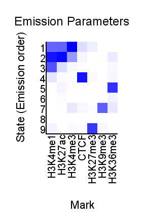
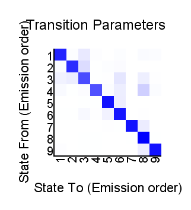
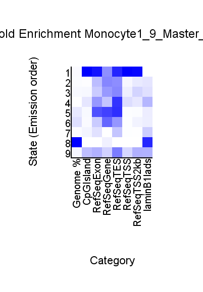
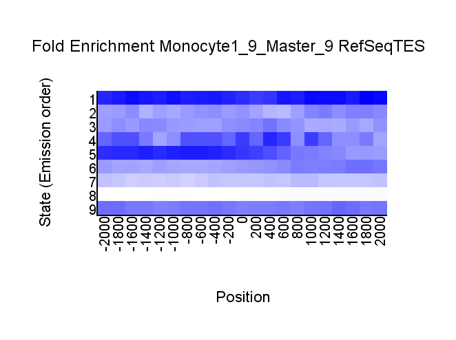
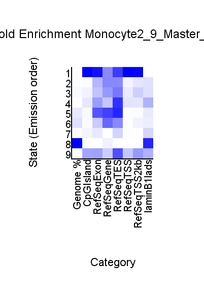
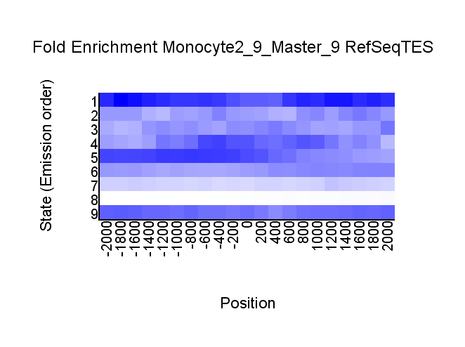
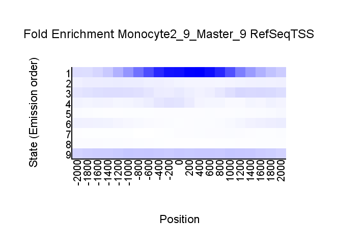

<center><h1>ChromHMM Report</h1></center>
Input Directory: ./RESULTS<br>
Output Directory: ./RESULTS/LearnModel_9<br>
Number of States: 9<br>
Assembly: hg19<br>
Full ChromHMM command: LearnModel -i Master_9 -l ./CHROMSIZES/hg19_chr16.txt -printposterior -printstatebyline ./RESULTS ./RESULTS/LearnModel_9 9 hg19
<h1>Model Parameters</h1>
<br>
<li><a href="emissions_9_Master_9.svg">Emission Parameter SVG File</a><br>
<li><a href="emissions_9_Master_9.txt">Emission Parameter Tab-Delimited Text File</a><br>
<br>
<li><a href="transitions_9_Master_9.svg">Transition Parameter SVG File</a><br>
<li><a href="transitions_9_Master_9.txt">Transition Parameter Tab-Delimited Text File</a><br><br>
<li><a href="model_9_Master_9.txt">All Model Parameters Tab-Delimited Text File</a> <br>
<h1>Genome Segmentation Files</h1>
<li><a href="Monocyte1_9_Master_9_segments.bed">Monocyte1_9_Master_9 Segmentation File (Four Column Bed File)</a><br>
<li><a href="Monocyte2_9_Master_9_segments.bed">Monocyte2_9_Master_9 Segmentation File (Four Column Bed File)</a><br>
<li><a href="STATEBYLINE"> Directory of Maximum States Assignments Line By Line</a><br>
<li><a href="POSTERIOR"> Directory of Posterior Files</a><br>
<br>
Custom Tracks for loading into the <a href="http://genome.ucsc.edu">UCSC Genome Browser</a>:<br>
<li><a href=Monocyte1_9_Master_9_dense.bed>Monocyte1_9_Master_9 Browser Custom Track Dense File</a> <br>
<li><a href=Monocyte1_9_Master_9_expanded.bed>Monocyte1_9_Master_9 Browser Custom Track Expanded File</a><br>
<li><a href=Monocyte2_9_Master_9_dense.bed>Monocyte2_9_Master_9 Browser Custom Track Dense File</a> <br>
<li><a href=Monocyte2_9_Master_9_expanded.bed>Monocyte2_9_Master_9 Browser Custom Track Expanded File</a><br>
<h1>State Enrichments</h1>
<h2>Monocyte1_9_Master_9 Enrichments</h2>
 <br>
<li><a href="Monocyte1_9_Master_9_overlap.svg">Monocyte1_9_Master_9 Overlap Enrichment SVG File</a><br>
<li><a href="Monocyte1_9_Master_9_overlap.txt">Monocyte1_9_Master_9 Overlap Enrichment Tab-Delimited Text File</a><br>
 <br>
<li><a href="Monocyte1_9_Master_9_RefSeqTES_neighborhood.svg">Monocyte1_9_Master_9_RefSeqTES_neighborhood Enrichment SVG File</a><br>
<li><a href="Monocyte1_9_Master_9_RefSeqTES_neighborhood.txt">Monocyte1_9_Master_9_RefSeqTES_neighborhood Enrichment Tab-Delimited Text File</a><br>
 <br>
<li><a href="Monocyte1_9_Master_9_RefSeqTSS_neighborhood.svg">Monocyte1_9_Master_9_RefSeqTSS_neighborhood Enrichment SVG File</a><br>
<li><a href="Monocyte1_9_Master_9_RefSeqTSS_neighborhood.txt">Monocyte1_9_Master_9_RefSeqTSS_neighborhood Enrichment Tab-Delimited Text File</a><br>
<h2>Monocyte2_9_Master_9 Enrichments</h2>
 <br>
<li><a href="Monocyte2_9_Master_9_overlap.svg">Monocyte2_9_Master_9 Overlap Enrichment SVG File</a><br>
<li><a href="Monocyte2_9_Master_9_overlap.txt">Monocyte2_9_Master_9 Overlap Enrichment Tab-Delimited Text File</a><br>
 <br>
<li><a href="Monocyte2_9_Master_9_RefSeqTES_neighborhood.svg">Monocyte2_9_Master_9_RefSeqTES_neighborhood Enrichment SVG File</a><br>
<li><a href="Monocyte2_9_Master_9_RefSeqTES_neighborhood.txt">Monocyte2_9_Master_9_RefSeqTES_neighborhood Enrichment Tab-Delimited Text File</a><br>
 <br>
<li><a href="Monocyte2_9_Master_9_RefSeqTSS_neighborhood.svg">Monocyte2_9_Master_9_RefSeqTSS_neighborhood Enrichment SVG File</a><br>
<li><a href="Monocyte2_9_Master_9_RefSeqTSS_neighborhood.txt">Monocyte2_9_Master_9_RefSeqTSS_neighborhood Enrichment Tab-Delimited Text File</a><br>
